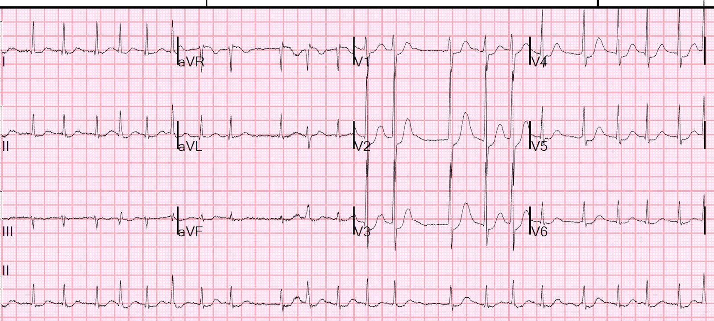
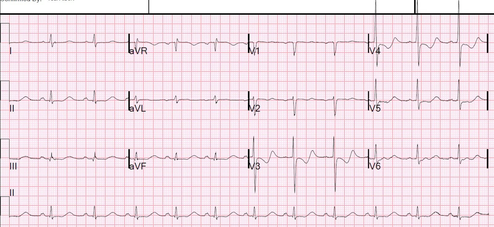
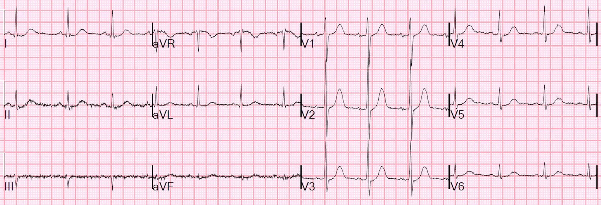
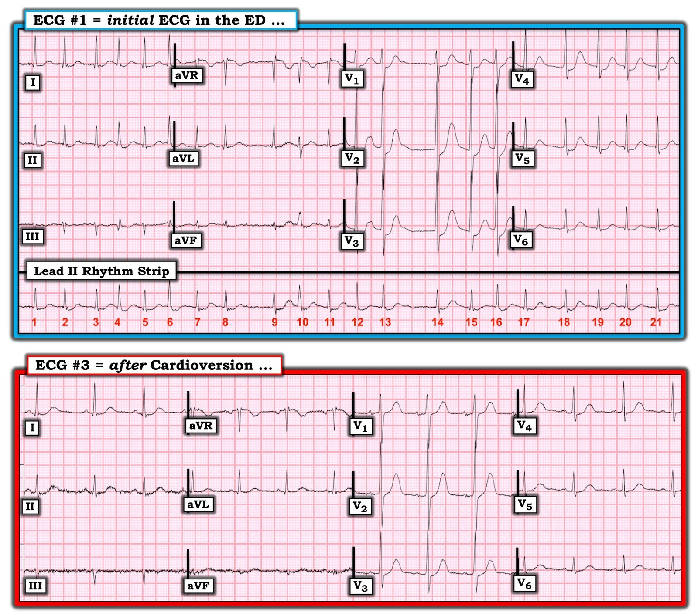

17/06/2020 — Một người 60 mấy tuổi bị tức ngực, hồi hộp đánh trống ngực và ST chênh xuống ở V1-V3
Bản dịch tiếng Việt của bài "A 60-something has chest tightness, palpitations, and ST depression V1-V3" – Dr. Smith’s ECG Blog. Giữ nguyên toàn bộ 6 hình ảnh của bản gốc.
Một người 60 mấy tuổi bị tức ngực, hồi hộp đánh trống ngực (palpitations). Hồ sơ cho thấy tiền sử có hở van hai lá mức độ nào đó và nhĩ trái lớn, cùng với tăng huyết áp đang điều trị bằng thuốc lợi tiểu thiazide.
Điện tâm đồ trước viện cho thấy ST chênh xuống ở V1-V3 và nhân viên cấp cứu ngoài viện lo ngại STEMI thành sau.
Khi đến viện, bệnh nhân chỉ hơi khó chịu, cho biết ông “lúc nào cũng tức ngực” nhưng “tim bắt đầu nhảy loạn xạ” từ một giờ trước.
Mạch 128 và không đều, HA 141/75.
Đây là điện tâm đồ 12 chuyển đạo:


ST chênh xuống tối đa ở V2 và V3.
Bạn nghĩ gì? Bạn muốn làm gì?
ST chênh xuống ở V2, V3 thường gặp nhất là do thiếu máu cục bộ xuyên thành (transmural) “thành sau” (nay được gọi là “thành bên” theo một quy ước mà tôi không đồng ý, vì nhồi máu thành sau và thành bên khác nhau trên điện tâm đồ).
Tuy nhiên, đôi khi nó là do thiếu máu cục bộ dưới nội tâm mạc. Thiếu máu cục bộ dưới nội tâm mạc “không định khu”, nghĩa là nếu đây là dưới nội tâm mạc thì bạn không thể nói chắc chắn rằng nó thuộc thành trước. Hơn nữa, thiếu máu cục bộ dưới nội tâm mạc thường có vectơ STD hướng về II và V5, với vectơ STE soi gương (reciprocal) hướng về aVR.
Rung nhĩ với RVR thường đi kèm thiếu máu cục bộ dưới nội tâm mạc, vì vậy tôi nghĩ rất có thể đây KHÔNG phải nhồi máu thành sau, mà là thiếu máu cục bộ dưới nội tâm mạc. Thông thường, thiếu máu cục bộ như vậy do rung nhĩ xảy ra với đáp ứng thất rất nhanh (~150); ở đây thì không nhanh đến thế.
Siêu âm tim tại giường không tìm thấy rối loạn vận động thành nào, nhưng phương pháp này nổi tiếng là kém nhạy.
Kết quả K trả về là 2.7 mEq/L. Liệu STD này có phải do hạ kali máu?
Hạ kali máu có thể giả nhồi máu thành sau vì có ST chênh xuống kèm sóng U dương. Liệu ST chênh xuống này có phải do K thấp?
Không, điều này không phù hợp vì lý do sau:
Khác biệt chính giữa STD ở V2-V3 do hạ K và do nhồi máu thành sau là khoảng QU dài hơn nhiều so với QT của nhồi máu thành sau. Đây là một ví dụ hạ kali máu giả nhồi máu thành sau:


Sóng dương ở V2-V4 là sóng U
Lưu ý khoảng QU rất dài.
Ca bệnh tiếp diễn
Vậy điện tâm đồ này không phải do hạ kali máu, mà do hoặc thiếu máu cục bộ xuyên thành thành sau, hoặc thiếu máu cục bộ dưới nội tâm mạc.
Để cho vui, chúng tôi đã ghi các chuyển đạo phía sau V7-V9, và không có ST chênh lên; điều này không loại trừ nhồi máu thành sau, nhưng làm cho nó ít khả năng hơn.
Làm thế nào để phân biệt? Chúng tôi làm chậm tần số tim, hoặc bằng thuốc ức chế nút AV hoặc bằng sốc điện chuyển nhịp, và xem điều gì xảy ra.
Vì vậy chúng tôi đã sốc điện chuyển nhịp về nhịp xoang, và ghi một điện tâm đồ khác:


Đây là bằng chứng tốt cho thấy toàn bộ là liên quan đến tần số.
Vì vậy chúng tôi kết luận đây không phải hội chứng vành cấp.
Bệnh nhân được nhập viện.
Ông được loại trừ nhồi máu cơ tim.
Đây là kết quả TEE (siêu âm tim qua thực quản) một tháng trước đó:
Lớn nhĩ trái .
Kích thước buồng thất trái bình thường.
Phân suất tống máu thất trái ước tính bình thường .
Không có rối loạn vận động thành
Rung nhĩ được quy cho sự phối hợp giữa hở van hai lá kèm nhĩ trái lớn và hạ kali máu (do thuốc lợi tiểu thiazide điều trị tăng huyết áp).
Ông ra viện với một thuốc chống đông mới, một miếng dán theo dõi nhịp trong 2 tuần, và một thuốc chẹn beta, ở nhịp xoang.
Điểm cần học:
Khi có ST chênh xuống và rung nhĩ với RVR, rất hữu ích nếu sốc điện chuyển nhịp khi có thể, hoặc làm chậm dẫn truyền AV, trước khi cho rằng ST chênh xuống là hậu quả của ACS.

===================================
BÌNH LUẬN CỦA TÔI, bởi KEN GRAUER, MD (16/6/2020):
===================================
Một ca thú vị do Dr. Smith trình bày — về người đàn ông 60 mấy tuổi đến khám vì tức ngực (điều mà ông thường xuyên bị trước đây) — và hồi hộp đánh trống ngực mới khởi phát kèm theo điện tâm đồ #1, mà tôi đã sao lại trong Hình 1.
- Trong phần bàn luận ở trên, Dr. Smith đã trình bày chi tiết về ST chênh xuống tối đa ở các chuyển đạo V2 và V3 trên điện tâm đồ ban đầu ( = điện tâm đồ #1).
- Theo Dr. Smith — việc ST chênh xuống ở các chuyển đạo ngực của điện tâm đồ #1 phần lớn đã hết sau sốc điện chuyển nhịp (Xem điện tâm đồ #3 trong Hình 1) — ủng hộ mạnh mẽ kết luận của Dr. Smith rằng thiếu máu cục bộ dưới nội tâm mạc liên quan đến tần số là nguyên nhân khả dĩ nhất của ST chênh xuống thấy trên bản ghi ban đầu.
- Chúng ta được biết bệnh nhân này bị hạ kali máu (K+ huyết thanh = 2.7 mEq/L) vào thời điểm ghi điện tâm đồ #1. Chúng ta cũng được biết bệnh nhân này đã được nhập viện — nhưng không được cung cấp thêm thông tin.
- – – – – – – – – – – – – –
- LƯU Ý (17/6/2020): Vào lúc tôi viết các bình luận dưới đây — tôi không biết tiền sử bệnh trước đó của bệnh nhân này. Tất cả những gì tôi biết là bệnh nhân này đến khám vì tức ngực và hồi hộp đánh trống ngực — và ông “lúc nào cũng tức ngực”. Xin hãy xem xét các Câu hỏi tôi đặt ra và các Bình luận của tôi dưới đây từ góc nhìn đó.


CÂU HỎI: Với mục đích “đào sâu hơn” — NHẬN ĐỊNH lâm sàng của BẠN về ca này LÀ GÌ? Mặc dù đúng là xử trí cấp cứu đã thành công trong ca này (tức là, AFib nhanh của bệnh nhân đã được chuyển nhịp — và về cơ bản bạn đã loại trừ bệnh tim thiếu máu cục bộ cấp) — vẫn có một dấu hiệu điện tâm đồ quan trọng liên quan đến ca này mà chưa được nhắc tới.
- Dấu hiệu điện tâm đồ đó LÀ GÌ?
- Vượt ra ngoài phần cốt lõi: TẠI SAO nhát #10 trong điện tâm đồ #1 trông khác ở các chuyển đạo ghi đồng thời aVR, aVL, aVF và chuyển đạo II, so với các nhát khác trong cùng các chuyển đạo này?
TRẢ LỜI: Đọc ca này khiến tôi có một số câu hỏi lâm sàng:
- Đây có phải là cơn thứ 1 của AFib ở bệnh nhân 60 mấy tuổi này không? Mặc dù bệnh sử ngắn gọn được cung cấp ngụ ý rằng đây là cơn AFib thứ 1 của bệnh nhân — việc ông “lúc nào cũng tức ngực” có thể gợi ý đã có nhiều cơn AFib từng lúc thường xuyên trước đây.
- ĐIỂM THEN CHỐT (PEARL) #1 — Các nghiên cứu Holter đã cho thấy đại đa số các cơn AFib không kèm triệu chứng. Là người làm cấp cứu — chúng ta gặp những cơn AFib có kèm triệu chứng — nhưng ít nhất một nửa (nếu không nói là nhiều hơn) số bệnh nhân AFib có PAF (rung nhĩ kịch phát – Paroxysmal AFib), trong đó các cơn AFib tái phát với một tần suất nào đó — và phần lớn các lần tái phát đó dường như không có triệu chứng. Nhận thức được thực tế lâm sàng này trở nên đặc biệt quan trọng khi cân nhắc các câu hỏi về chống đông dài hạn.
- ĐIỂM THEN CHỐT (PEARL) #2 — Các SVT nhanh (bao gồm AFib) là một nguyên nhân có thể gây khó chịu ngực. Vì vậy — tôi muốn biết LIỆU cả hồi hộp đánh trống ngực và “tức ngực” của bệnh nhân này có cùng hết nhanh chóng ngay khi nhịp xoang được phục hồi hay không! NẾU vậy — điều này sẽ làm tăng thêm nhiều khả năng rằng người đàn ông 60 mấy tuổi này đã có các cơn PAF thường xuyên!
- Dấu hiệu điện tâm đồ cần được nhận ra trên cả hai bản ghi của bệnh nhân này là biên độ sóng R tăng rõ rệt bắt đầu ngay từ chuyển đạo V2. Mặc dù đúng là nhồi máu thành sau đôi khi gây vùng chuyển tiếp sớm với biên độ sóng R phía trước tăng — nó thường không tạo ra sóng R chiếm ưu thế như thấy ở chuyển đạo V2. Sóng R quá cao này ở chuyển đạo V2 không phải là dấu hiệu bình thường — và nó có thể là dấu hiệu chỉ điểm bệnh tim nền, có thể là một nguyên nhân góp phần gây AFib ở bệnh nhân này. Một siêu âm tim chính thức cần là một phần trong đánh giá tại bệnh viện của bệnh nhân này.
Vượt ra ngoài phần cốt lõi: Tôi gắn nhãn điểm lâm sàng cuối cùng mà tôi muốn bàn là “Vượt ra ngoài phần cốt lõi” — bởi vì mặc dù nó không ảnh hưởng gì đến kết cục của ca cụ thể này — việc nhận biết hiện tượng Ashman là một khái niệm lâm sàng quan trọng trong đọc rối loạn nhịp cấp cứu.
- Nguyên lý cơ bản của hiện tượng Ashman — là điều kiện cho dẫn truyền lệch hướng được tạo ra bởi sự tương tác giữa khoảng ghép từ nhát này đến nhát kế tiếp — và khoảng R-R đi trước (với độ dài của khoảng R-R đi trước này quyết định thời gian của thời kỳ trơ tiếp theo). Ví dụ, trong điện tâm đồ #1 — khoảng ghép của nhát #10 là khoảng R-R giữa nhát #9 và nhát 10. Khoảng ghép này càng ngắn — thì khả năng nhát #10 rơi vào RRP (thời kỳ trơ tương đối – Relative Refractory Period) của nhát #9 càng lớn (và khả năng nhát #10 dẫn truyền lệch hướng càng lớn).
- Cách “dễ” để nghĩ về hiện tượng Ashman — là nhớ rằng các nhát dẫn truyền lệch hướng có xu hướng đi sau các khoảng ngưng dài hơn. Lý do là khoảng ngưng tương đối dài hơn giữa nhát #8 và nhát 9 trong điện tâm đồ #1 sẽ kéo dài RRP của nhát #9.
- LƯU Ý: Cả hai yếu tố (tức là, khoảng ghép và khoảng R-R đi trước) đều tham gia quyết định một nhát đến sớm nhất định sẽ dẫn truyền bình thường hay lệch hướng.
- Trong điện tâm đồ #1 — khoảng ghép ngắn nhất trên toàn bộ dải nhịp chuyển đạo II là giữa nhát #3 và nhát 4. Mặc dù nhát #4 có dẫn truyền lệch hướng nhẹ (thấy rõ nhất ở chuyển đạo III đối với nhát #4) — lý do nhát #10 có mức độ lệch hướng lớn hơn nhiều là vì khoảng R-R đi trước (tức là, khoảng R-R giữa nhát #8 và nhát 9) dài hơn nhiều so với khoảng R-R đi trước nhát #4.
- Trong điện tâm đồ #1 — khoảng R-R đi trước dài nhất là giữa nhát #13 và nhát 14. Nhưng dù khoảng ngưng giữa nhát #13 và #14 dài như vậy, lý do nhát #15 không dẫn truyền lệch hướng là vì khoảng ghép của nó (tức là, khoảng R-R giữa nhát #14 và nhát 15) không hề ngắn bằng khoảng ghép của nhát #10.
- LƯU Ý: Sự tương tác này giữa khoảng R-R đi trước và khoảng ghép của nhát đến sớm không phải lúc nào cũng chính xác. Rõ ràng nó kém hoàn hảo khi đánh giá các nhát đến sớm trong AFib, vì dẫn truyền ẩn có thể làm giảm độ tin cậy của việc dự đoán RRP từ điện tâm đồ bề mặt. Nhưng, nhận biết hiện tượng Ashman là hữu ích — và khi đã thực hành thì cho phép bạn “nhìn qua” một nhịp AFib và ngay lập tức nghi ngờ rằng nhát rộng nhất, trông khác biệt nhất (là nhát #10) nhiều khả năng là dẫn truyền lệch hướng (chứ không phải PVC) — bởi vì khoảng ghép của nhát #10 ngắn và nhát này cũng đi sau một khoảng ngưng tương đối dài hơn.
- BẤM VÀO ĐÂY — để xem giải thích chi tiết hơn về hiện tượng Ashman.
- Để hiểu thấu đáo hơn mối liên hệ phức tạp của hiện tượng Ashman trong AFib — BẤM VÀO ĐÂY.